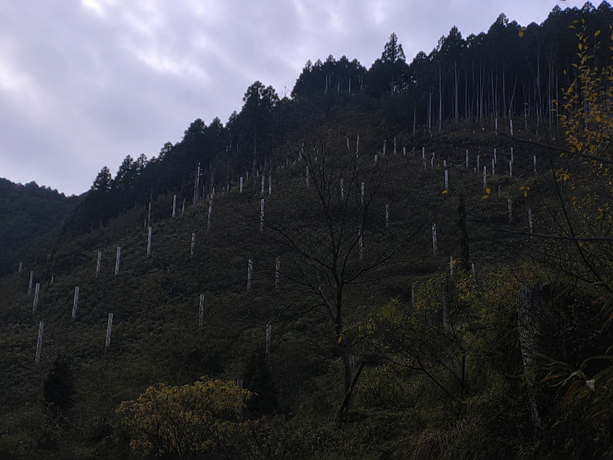

A
Alex
ローカル板利用者
04/17 02:25
普通に怖い。夜中に見るんじゃなかった。
でも写真だけだと墓なのか何なのか分からないですね。
参考になった 11
コメント 2

京都旅行中に撮った写真です。山の中に白いものがずっと並んでいて、遠くから見ると墓地みたいに見えました。
地元の人に聞いても「昔からある」としか言われなくて、少し気味が悪かったです。
場所は杉守村の奥、杉守山の林道を車でしばらく入ったところです。
普通に怖い。夜中に見るんじゃなかった。
でも写真だけだと墓なのか何なのか分からないですね。
こういう場所、昼でも行きたくない。
墓じゃないとしても、同じ形のものが並んでるだけで怖い。
杉守村って、観光案内に載ってる場所ですよね。
でもその奥まで行ったことはないです。普通に迷いそう。
観光地の奥って、たまに変なものありますよね。
管理用の目印とか、古い道標とか、そういうものでは？
見た目は墓っぽいけど、たぶん墓碑ではないと思います。
写真の解像度が低いので、木の札か石かも分からないですね。
名前がもう怖い。
杉守山って字面だけで何かありそうに見えるのずるい。
その辺の人たちは、普段はかなり普通です。観光客にもわりと親切です。
ただ、杉鳴神社とか信仰の話になると、急に空気が変わることがあります。
悪い意味で怖いというより、「そこから先は外の人が触らないで」という感じです。
前にも似たような写真を見た気がします。
ただ、こういう写真って角度と光でかなり印象が変わるので、実物を見ると普通なのかもしれません。
墓ではない気がするけど、何なのかは分からない。
白いものが規則的に並んでるのがちょっと不気味ですね。
こういう質問、夜中に読むものじゃなかった。
朝になったらただの山道写真に見えるかもしれない。